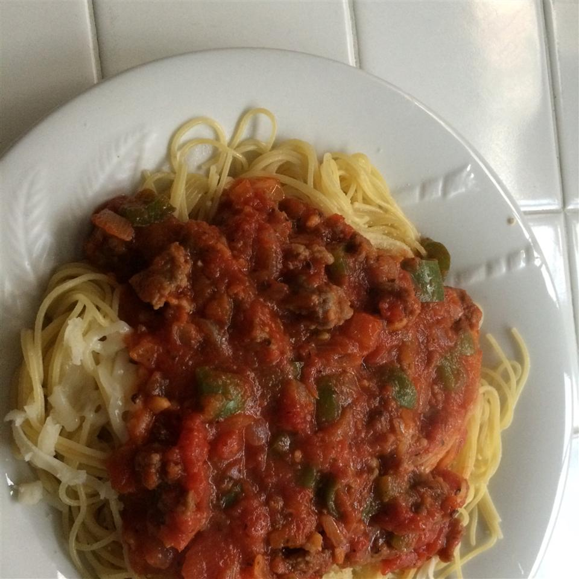

Easy Italian Sausage Spaghetti

The classic spaghetti recipe with italian sausage
Everyone's favorite spaghetti dish with homemade sauce and italian sausage.
Ingredients
- 1 tablespoon olive oil
- 2 pounds sweet italian sausage
- 1 pound sliced fresh mushroom
- 1 chopped onion
- 1 chopped green bell pepper
- 1 tablespoon minced garlic
- 2 cans tomato sauce (28 oz)
- 2 diced tomatoes
- 1 can tomato paste (6 oz)
- 1 can sliced black olives (6 oz)
- 1 teaspoon oregano
- 1 teaspoon basil
- salt to taste
- 1 package spaghetti (16 oz)
- 1/4 cup grated Parmesan cheese
Steps
- Heat olive oil in a large skillet over medium-high heat. Cook and stir sausage, mushrooms, onion, green bell pepper, and garlic in the hot oil until sausage is browned and crumbly, about 20 minutes; drain and discard grease.
- Stir tomato sauce, diced tomatoes, tomato paste, and olives into sausage mixture; season with oregano, basil, and salt. Simmer mixture until flavors infuse, about 30 minutes.
- Bring a large pot of lightly salted water to a boil. Cook spaghetti in the boiling water, stirring occasionally until cooked through but firm to the bite, about 12 minutes. Drain and transfer to a serving bowl; top with tomato-sausage sauce and Parmesan cheese.
Recipe from AllRecipes.com